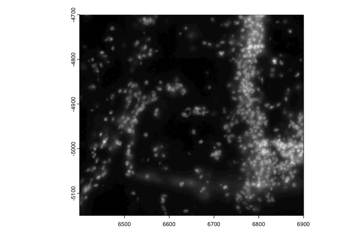
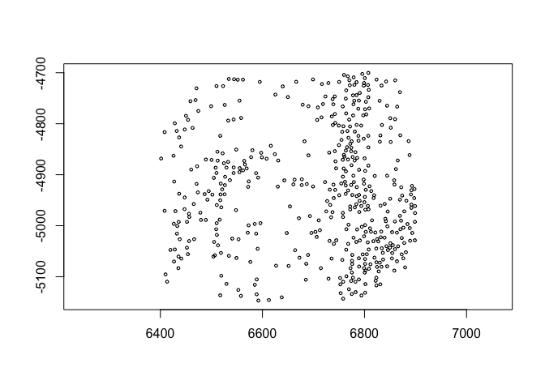
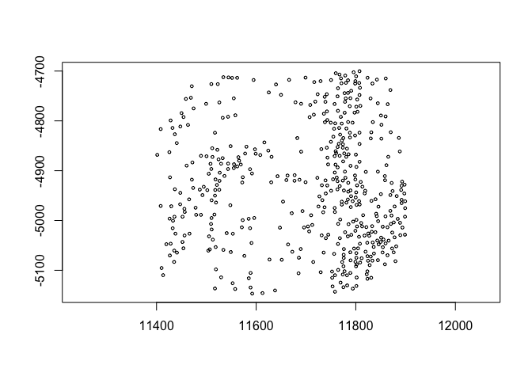
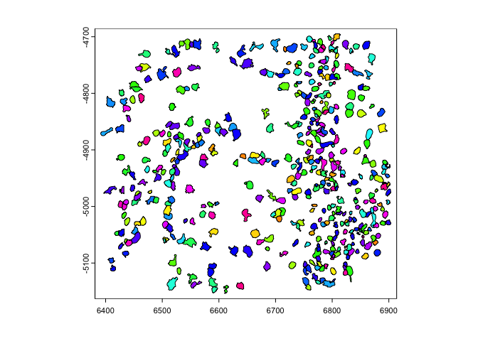
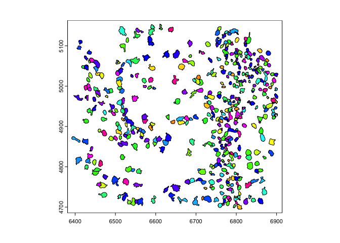
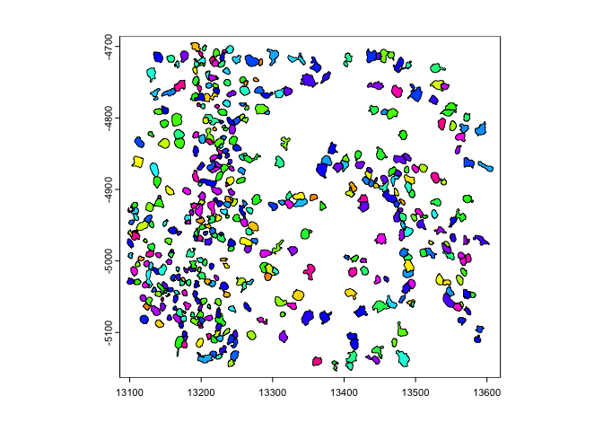
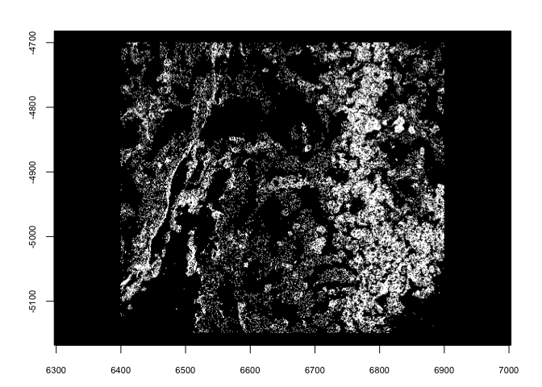

Spatial Transformations
7/28/23
Source:vignettes/spatial_transformations.Rmd
spatial_transformations.Rmd1. Spatial Object Manipulation
Spatial-omics data is defined both by the biological information that it contains and the way that it maps to space. When assembling and analyzing a spatial dataset, it may be necessary to spatially manipulate the data so that they are all in a common coordinate reference frame where all data is in at the same scaling and rotation, and properly overlaid.
Giotto extends a set of generics from terra in order to make it simple to figure out where data is in space and to move it where you need it.
2. Start Giotto
# Ensure Giotto Suite is installed
i_p = installed.packages()
if(!"Giotto" %in% i_p) devtools::install_github("drieslab/Giotto@suite")
library(Giotto)
# Ensure Giotto Data is installed
if(!"GiottoData" %in% i_p) devtools::install_github("drieslab/GiottoData")
library(GiottoData)
# Ensure the Python environment for Giotto has been installed
genv_exists = checkGiottoEnvironment()
if(!genv_exists){
# The following command need only be run once to install the Giotto environment
installGiottoEnvironment()
}3. Load mini giotto object example
First we will load in the a mini dataset put together from Vizgen’s Mouse Brain Receptor Map data release. This mini giotto object has been pre-analyzed and comes with many analyses and data objects attached. Most of these analyses have been performed on the ‘aggregate’ spatial unit so we will set it as the active spatial unit in order to default to it.
viz <- GiottoData::loadGiottoMini(dataset = 'vizgen')
activeSpatUnit(viz) <- 'aggregate'4. Extract spatial info
Then we will extract the spatial subobjects that we will use. These will be all subobjects in Giotto that contain coordinates data or directly map their data to space.
image <- getGiottoImage(viz, image_type = 'largeImage', name = 'dapi_z0')
spat_locs <- getSpatialLocations(viz)
spat_net <- getSpatialNetwork(viz)
gpoints <- getFeatureInfo(viz, return_giottoPoints = TRUE)
gpoly <- getPolygonInfo(viz, polygon_name = 'aggregate', return_giottoPolygon = TRUE)5. Defining bounds and extent
One of the most convenient descriptors of where an object is in space
is its minima and maxima in the coordinate plane, also known as the
boundaries or spatial extent of that information. It
can be thought of as bounding box around where your information exists
in space. Giotto incorporates usage of the
SpatExtent class and associated ext() generic
from terra to describe objects spatially.
ext(image) # giottoLargeImage
ext(spat_locs) # spatLocsObjSpatExtent : 6401.41164725267, 6899.10802819571, -5146.74746408943, -4700.32590047134 (xmin, xmax, ymin, ymax)
ext(spat_net) # spatNetObj
ext(gpoints) # giottoPoints
ext(gpoly) # giottoPolygonSpatExtent : 6391.46568586489, 6903.57332779812, -5153.89721175534, -4694.86823300896 (xmin, xmax, ymin, ymax)5.1 Image extent
With giottoLargeImage objects, you are additionally able
to assign how they map to space using ext(). Note that
modifications performed on one giottoLargeImage are applied
to all references to that object unless copy() is used
first.
e <- ext(image) # save extent
plot(image)

ext(image) <- e # replace6. Spatial Transformations
Commonly used spatial transformations are coordinate translations,
flips, and rotations. Giotto extends generics from
terra through the use of spatShift()
(shift() in terra), flip(), and
spin() respectively.
6.1 coordinate translation
spatShift() is used for simple coordinate translations.
It takes the params dx and dy for distance to
translate along either axis.
plot(spat_locs)

(pay attention to the x coords)
6.2 flip
flip() will flip the data over a defined line of either
‘vertical’ or ‘horizontal’ symmetry (default is ‘vertical’ with the line
of symmetry being y = 0. The direction param partial
matches for either ‘vertical’ or ‘horizontal’. The y0 and
x0 params define where the line of symmetry is.
This is useful for assembling datasets where the data is based on
coordinates where the y values increase negatively. This behavior is
different from the default behavior in terra where objects are
flipped over the minima of their extents. This difference is needed
because often, values are defined in reference to the coordinate origin
and any distance away from the axes is meaningful for alignment after
flipping. If the default behavior of flipping over the extent is
desired, NULL can be passed to the relevant y0 or
x0 param.
rb = getRainbowColors(100)
plot(gpoly, col = rb)
plot(flip(gpoly), col = rb) # flip to positive y
plot(flip(gpoly, direction = 'h', x0 = 1e4), col = rb) # flip across x = 10000
6.3 spin
spin() allows rotating of vector data through degrees
passed to angle param. The rotation happens about a
coordinate defined by x0 and y0. By default
x0 and y0 are defined as the object
center.
plot(gpoints)
plot(spin(gpoints, angle = 45))
plot(spin(gpoints, angle = 45, x0 = 0, y0 = 0))
7. Session Info
R version 4.2.1 (2022-06-23)
Platform: x86_64-apple-darwin17.0 (64-bit)
Running under: macOS Big Sur ... 10.16
Matrix products: default
BLAS: /Library/Frameworks/R.framework/Versions/4.2/Resources/lib/libRblas.0.dylib
LAPACK: /Library/Frameworks/R.framework/Versions/4.2/Resources/lib/libRlapack.dylib
locale:
[1] en_US.UTF-8/en_US.UTF-8/en_US.UTF-8/C/en_US.UTF-8/en_US.UTF-8
attached base packages:
[1] stats graphics grDevices utils datasets methods base
other attached packages:
[1] GiottoData_0.2.3 Giotto_3.3.1
loaded via a namespace (and not attached):
[1] Rcpp_1.0.11 pillar_1.9.0 compiler_4.2.1 tools_4.2.1
[5] digest_0.6.31 scattermore_0.8 checkmate_2.2.0 jsonlite_1.8.4
[9] evaluate_0.21 lifecycle_1.0.3 tibble_3.2.1 gtable_0.3.3
[13] lattice_0.20-45 png_0.1-8 pkgconfig_2.0.3 rlang_1.1.1
[17] igraph_1.4.2 Matrix_1.5-4 cli_3.6.1 rstudioapi_0.14
[21] parallel_4.2.1 yaml_2.3.7 xfun_0.39 fastmap_1.1.1
[25] terra_1.7-39 withr_2.5.0 dplyr_1.1.2 knitr_1.42
[29] generics_0.1.3 vctrs_0.6.2 rprojroot_2.0.3 grid_4.2.1
[33] tidyselect_1.2.0 here_1.0.1 reticulate_1.28 glue_1.6.2
[37] data.table_1.14.8 R6_2.5.1 fansi_1.0.4 rmarkdown_2.21
[41] ggplot2_3.4.2 magrittr_2.0.3 backports_1.4.1 scales_1.2.1
[45] codetools_0.2-18 htmltools_0.5.5 colorspace_2.1-0 utf8_1.2.3
[49] munsell_0.5.0